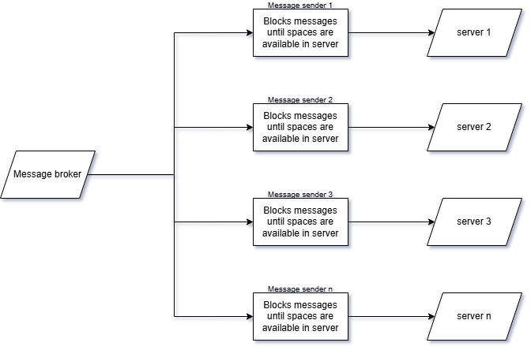
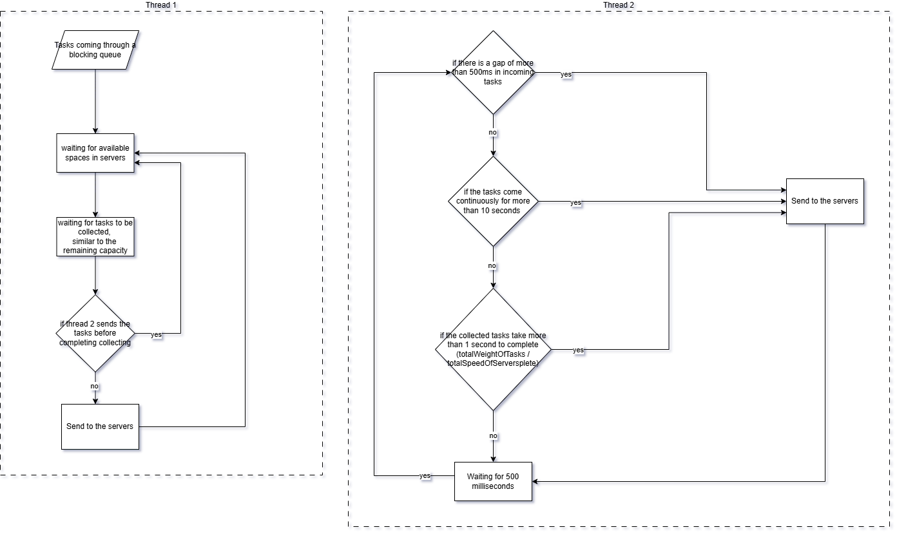
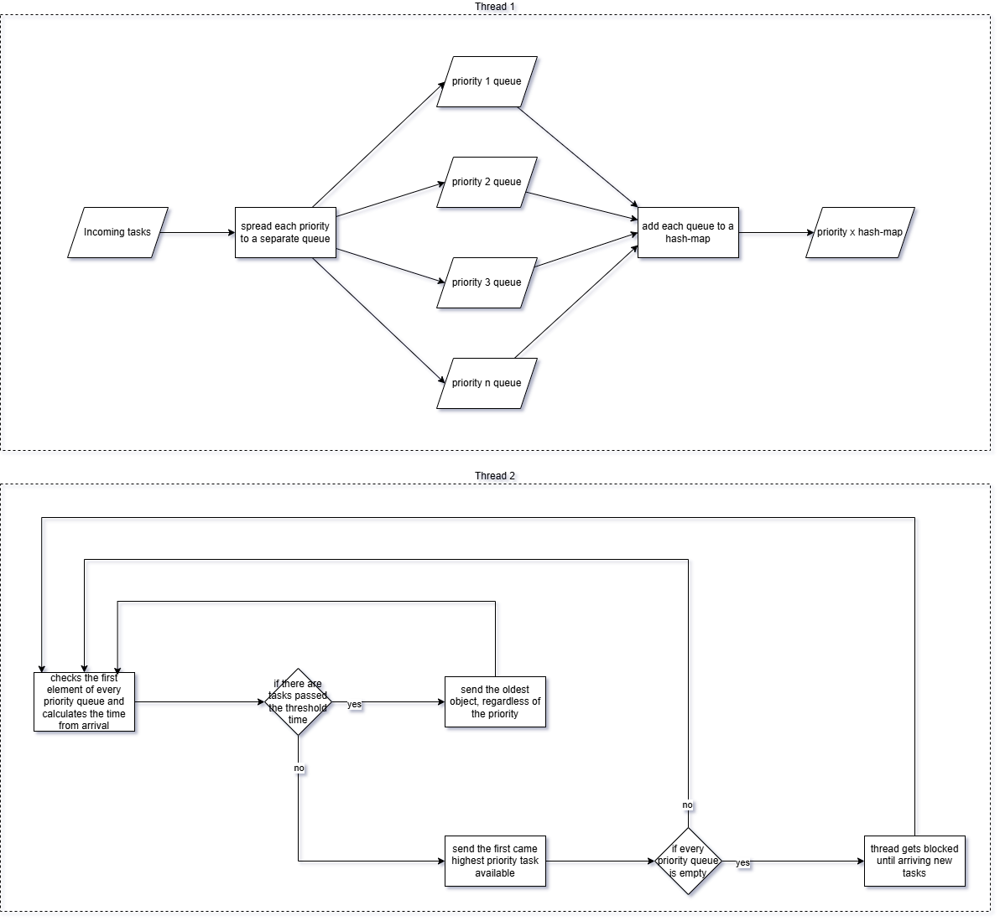
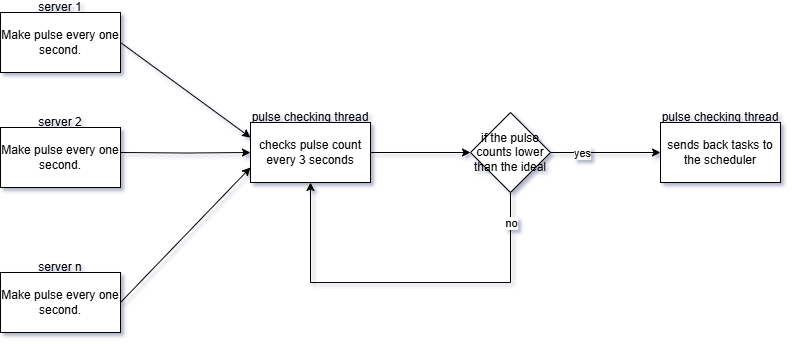
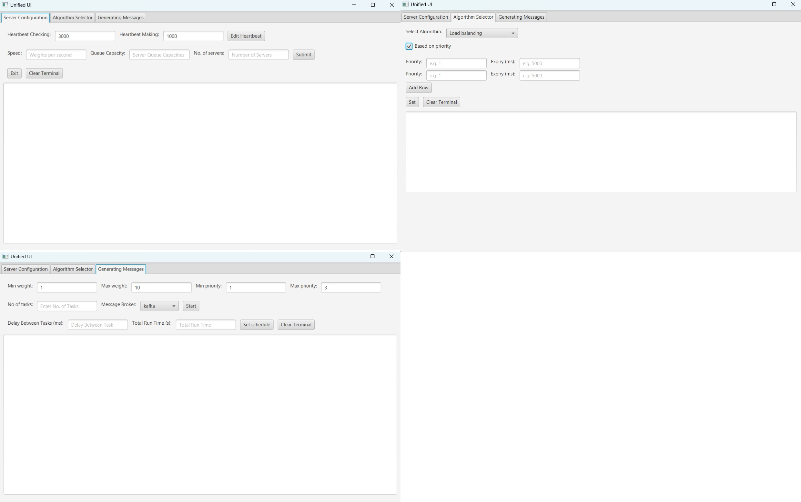

The scheduler retrieves tasks from a message broker.
Based on the scheduling algorithm each task is sent to a server.
Task processing is represented by the server sleep. Sleeping time is calculated by dividing the weight of the task by the speed of the particular server.
The server saves the completed task in the database.
Components
Docker:
servers
algorithm schedulers
message broker (Kafka)
database (Cassandra)
Outside the Docker:
Controller
Dashboard
Uniqueness and efficiency
Without simply checking the tasks at fixed intervals, the load balancing algorithm considers multiple factors and does the scheduling in 4 steps.
The scheduler waits for the load of servers to get low and calculates the total current loads of servers before the distribution.
From a ticker, it checks the regularity of incoming tasks and identifies the increased gapping and unstopped flows of incoming tasks.
If the gaps of incoming task flow increase or the task flow stops, the scheduler does the distribution.
After identifying continuous incoming tasks by an indicator, the scheduler compares the total weight of collected tasks with the speeds of servers and again does the distribution.
Therefore, the program can handle high throughput and does the scheduling minimising the wait inside the scheduler for any task arriving speed pattern.
Comparison between existing methods
The common scheduling method is that the scheduler sleeps for a fixed duration before waking up to perform scheduling tasks.
Other programs
Pros:
The mechanism is simple
Working efficiently for tasks arriving similar patterns
Cons:
Works less efficiently in scenarios where the tasks arriving pattern differs from time to time
This program
Pros:
Works efficiently for the scenarios that the tasks arriving pattern differ from time to time
Cons:
The mechanism is complex compared to the scheduler with a fixed sleeping time.
Technology selection for high-performance
Apache Kafka as the Message Broker
WebSockets for Real-Time Communication
React-ECharts for Dynamic Data Visualization
Task recovery
The program ensures the recovery of every task, at a crash of a server. The heartbeat mechanism is able to identify the crashed threads. If a crashed server is detected, the system recovers all the tasks in the queue of the crashed server and tasks currently in between the scheduler and the crashed server.
Scheduling Algorithms
Scheduling Algorithms
Complete and then fetch
Load balancing
Priority scheduling
Complete and then fetch
Complete and then fetch algorithm passes tasks to the server if there are available spaces in server queues. This algorithm generates a similar number of threads to the servers. Tasks distribution is handled by each of these threads separately.

Source code
Load balancing
Load balancing goes through the servers and assigns each task to get the almost shortest finishing time.

Source code
Mechanism
Listening and scheduling thread
Tasks are taken either directly from the Kafka listener or the priority scheduler. Load balancing happens only if there are empty servers (To do the load balancing it takes the estimated finishing time of the assigned tasks of each server. Doing this is an O(n^2) calculation. Therefore by waiting to lower the load of servers, the scheduler can reduce the calculation time). After that, the scheduling thread gets the total available capacities of every server. Then the scheduling thread collects a similar number of tasks to the total available capacities from the incoming queue. After that, this bunch of tasks are distributed to each server depending on the current server load, task weight and server speed.
Timing thread - first scenario
When collecting tasks from the incoming queue, if there are not sufficient tasks similar to total available capacities, the timing thread gets noticed it. Then the timing thread passes already collected tasks to the distributor.
Timing thread - second scenario
If the number of total available capacities is high and takes a long to collect a similar number of tasks from the incoming queue, then again the timing thread passes already collected tasks to the distributor.
Priority scheduling
There is a threshold time for each priority to stop the starvation (Lower priorities remain without execution because of the continuous execution of higher priorities). Priority scheduling can be used with load balancing and complete-fetch algorithms. At the startup of the service, threshold times need to be assigned.

Source code
Mechanism
Includes:
3 Threads
Input thread
Scheduling thread
Timing thread
Blocking queue for incoming tasks
Concurrent hash map for categorising tasks by priority
The input thread gets the tasks from the incoming tasks queue and puts them into the priority map. This thread gets blocked if there are no incoming tasks. And it gets wakes up by the incoming tasks.
In one iteration of a scheduling thread, first, it checks for the old tasks (tasks that have passed the threshold time). If there is an old task, it sends the server. If there are no old tasks at the checking time, priority scheduling takes the tasks from the available highest priority. When the priority map gets emptied, the scheduling thread gets blocked until it wakes up from the timing thread.
Comparison between common priority scheduling algorithm
To do a schedule based on priority it needs a bunch of tasks at once (If we assign tasks to servers at the oncoming speed, tasks are assigned based on the coming order). The timing thread is a dedicated thread to watch the incoming speed of tasks (The common approach is, blocks the task flow for a given time, collect tasks and send them to the scheduling. The problem is the blocking time is highly related to the task arrival speed. To work efficiently, this blocking time has to change based on the time arriving speed. But if the tasks every time come at a constant speed, then blocking the task flow and collecting is coding-wise simpler). If the task arriving time between two tasks gets increased over a given time, the timing thread blocks the scheduling thread. And if the task arrival time is lower (the lowest time should be declared) over a long period timing thread again blocks the scheduling thread.
Multi-Server simulator
Multi-Server simulator
Heartbeat mechanism and task recovery
Identifying new servers automatically
Heartbeat mechanism and task recovery

The heartbeat mechanism is for identifying the crashed servers. Every server sends a signal at a given rate. By catching the stop of signal sending heartbeat checking thread can identify a broken server. If a server gets crashed,
tasks currently were that server
tasks currently on the scheduler
tasks currently in between the scheduler and server
get recovered.
Identifying new servers automatically
When a new server is added, the server scheduler gets notified automatically.
Controller & Dashboard
Controller & Dashboard
Controller
Dashboard
Controller
Creating new servers - Servers can added one at a time or have the ability to have many servers with the same speed and capacity at once.
Selecting the scheduling algorithm - Complete and then fetch algorithm and load balancing can be selected with or without priority scheduling.
Generating tasks - Messages can be sent via either Kaffka or RabbitMQ. Messages can be generated by simply adding the number of messages needed. Since there is a delay when sending lots of messages at once to the message broker through one thread, the number of threads can be increased.
Sending messages with a fixed interval for a specified period.

Dashboard
Chart of on-time server load
Gets summary when a set of tasks completes (How many tasks are handled by each server, the total waits of every task from generate to start process)
Crashing a server (To simulate the malfunction in a server)
Task table (To view the database through the backend. All the details of every task in the order of process completed time)